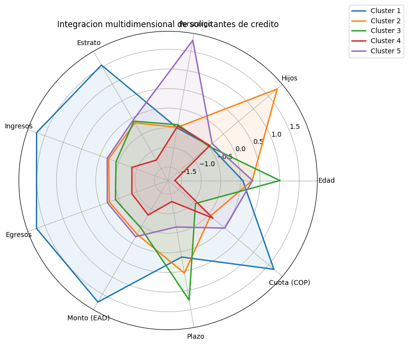

Cinco semillas iniciales y actualizacion de medoides por distancia minima.
Reto 4 · GitHub Pages
Integracion Multidimensional de Solicitantes de Credito
Caso de estudio del sector Fintech en el que se busca reducir la atencion de los solicitantes a cinco nuevas sucursales, utilizando el metodo de K-Medoids como tecnica de integracion multidimensional.
Registros con informacion valida para el proceso de integracion.
Edad, Hijos, Perscargo, Estrato, Ingresos, Egresos, Monto, Plazo y Cuota.
Objetivo
Integrar los solicitantes de credito en cinco nuevas sucursales para apoyar la toma de decisiones de la entidad, identificando numero de clientes, municipios de procedencia y comportamiento de preaprobacion o prenegacion.
Metodologia
Se emplearon las variables numericas del enunciado, se normalizaron los datos y se aplico K-Medoids con cinco semillas iniciales para construir clusters representativos.
Resultados por Nueva Sucursal
| Cluster | Clientes | Preaprobados | Prenegados | % Preaprobacion | % Prenegacion |
|---|---|---|---|---|---|
| 1 | 1358 | 1211 | 147 | 89.18% | 10.82% |
| 2 | 261 | 121 | 140 | 46.36% | 53.64% |
| 3 | 2267 | 924 | 1343 | 40.76% | 59.24% |
| 4 | 1407 | 387 | 1020 | 27.51% | 72.49% |
| 5 | 549 | 240 | 309 | 43.72% | 56.28% |
Municipios Predominantes
| Cluster | Municipios de procedencia |
|---|---|
| 1 | Bello (53.24%), Medellin (31.81%), Itagui (8.47%), Envigado (3.61%), Sabaneta (2.87%) |
| 2 | Sabaneta (39.08%), Caldas (34.87%), Bello (11.49%), Itagui (9.96%), Medellin (3.45%) |
| 3 | Sabaneta (44.95%), Caldas (32.29%), Itagui (15.62%), Bello (7.15%) |
| 4 | Caldas (63.82%), Sabaneta (31.34%), Bello (1.99%), Itagui (1.63%), Envigado (1.21%) |
| 5 | Sabaneta (36.98%), Caldas (28.60%), Bello (18.94%), Itagui (12.75%), Envigado (1.46%), Medellin (1.28%) |
Representacion Multidimensional
El siguiente grafico de radar resume el comportamiento promedio de las variables consideradas en cada cluster.

Interpretacion General
- El cluster 1 concentra el segmento mas favorable, con la mayor tasa de preaprobacion.
- El cluster 4 presenta la mayor proporcion de prenegacion y un perfil economico relativamente mas bajo.
- Los clusters 3 y 5 agrupan una parte importante de solicitantes provenientes de Sabaneta y Caldas.
- La segmentacion final depende de la combinacion de variables sociodemograficas y financieras, no solo del municipio.
Conclusion
La integracion multidimensional mediante K-Medoids permitio consolidar los solicitantes en cinco nuevas sucursales con perfiles diferenciados. Esta clasificacion facilita el analisis comercial y el apoyo a la toma de decisiones dentro de la entidad Fintech.